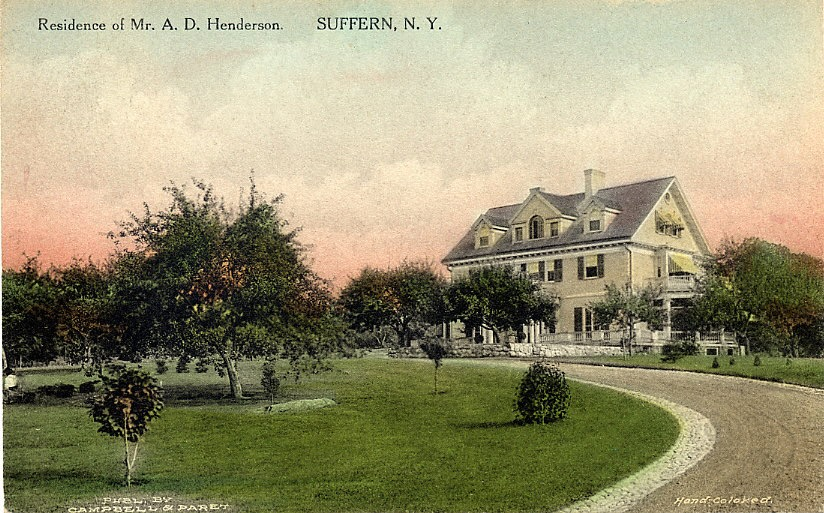

Residence of A. D. Henderson
Suffern, New York
History
Alexander Dawson Henderson Sr., and his wife Ella Brown Henderson built an impressive country estate in Suffern Park, near the intersection of Campbell Avenue and the Nyack Turnpike (present-day Route 59) in Suffern, New York. Henderson began his career as a bookkeeper for the California Perfume Company (later known as Avon Products) in New York City, eventually rising through the ranks to become the company’s vice president and treasurer.
After spending several summers in Suffern, Henderson decided to make the community his permanent home. In 1906, he purchased a 14-acre farm and hired architect William Hoar to design a Georgian-style residence on a hill overlooking the Nyack Turnpike. The property developed into a country estate featuring a working farm, a large vegetable garden, a greenhouse, large swimming pool, and a lake stocked with fish. he family also kept a cow, while a butler and household cook attended to the family's domestic needs.


Alexander D. Henderson Sr. built a cottage in Suffern Park, New York, for his son, Alexander Henderson Jr., and his wife, Mary. The cottage stood across the road from Henderson Sr.’s two-story home at 173 South Monsey Road. Alexander Jr. and Mary lived there with their children, Alex and Mary-Ella, from 1922 to 1929. The children’s German nanny lived upstairs, and the household also employed a cook.


A postcard was made of their Suffern house looking at the residence from the bottom of the driveway. The printing at the top of the postcard reads: “Residence of Mr. A. D. Henderson, Suffern, N.Y.” Source: New York Heritage digital collections, Suffern, New York.
The residence stood for 35 years before a fire broke out on November 1, 1941, while workers were in the process of demolishing the structure. Firefighters from the Suffern and Tallman fire departments responded and prevented the partially demolished building from being completely destroyed by the flames.
On September 14, 1944, J. Le Roy Sherwood of Suffern, New York, purchased the 18-acre property.

Last update: October 10, 2026